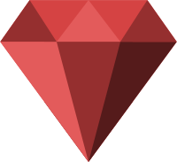
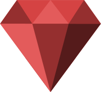

Ruby
Ruby was the first language that I felt like home. After years of using Java/JavaEE, using Ruby felt like a breath of fresh air.

Ruby was the first language that I felt like home. After years of using Java/JavaEE, using Ruby felt like a breath of fresh air.

Using Elixir mostly for APIs that need fast response time. Amazing language, amazing community.

After a couple of small projects using Elm, I decided to try React one more time and found a very concise and complete documentation with great examples.

❤️ Lisp